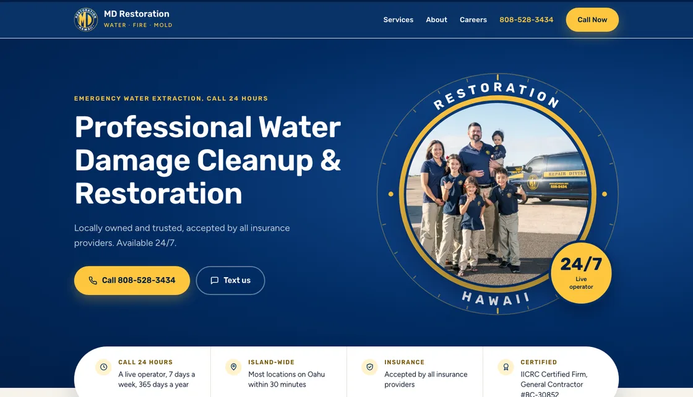

Round the Clock
This one is built out of your seal. The round badge on your vans and your shirts becomes the shape for the whole page, so the hero photo sits inside a big gold ring with RESTORATION and HAWAII running around it, marked off like a 24 hour clock. The buttons are round, the cards have soft corners, and each service sits in a rounded pill with a small photo of the work.
It's the friendliest of the three, and it puts your family right up front. For a company whose mantra is treating every customer as if they were family, that felt like the honest place to start. The navy and gold are the exact colors off your seal.
Type and color
A sturdy rounded font that matches the friendly lettering on your seal, with an easy to read font underneath. Deep navy and your seal's gold, with one full gold band for your mantra.
The trade-off
The seal shapes carry the whole personality, which makes this one feel like nobody but MD. That's a strength as long as the seal stays as it is. It's also the softest of the three, so it may feel more homey than some property managers and adjusters expect.